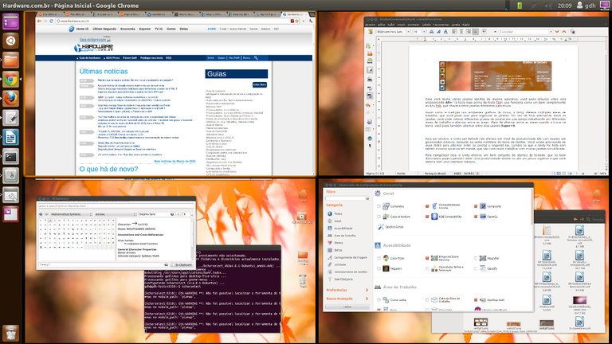
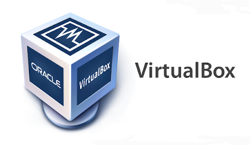

Definição: Software de código aberto é o software de computador com o seu código fonte disponibilizado e licenciado com uma licença de código aberto no qual o direito autoral fornece o direito de estudar,modificar e distribuir o software de graça para qualquer um e para qualquer finalidade.
Definição De Código Aberto
Software de código aberto é o software de computador com o seu código fonte disponibilizado e licenciado com uma licença de código aberto no qual o direito autoral fornece o direito de estudar,modificar e distribuir o software de graça para qualquer um e para qualquer finalidade.
Modo texto (linha de comando)
O Modo Texto do Linux é composto basicamente do shell e dos aplicativos que executam sobre ele. O shell pode ser considerado como um ponto a partir do qual podemos iniciar todos os comandos do Linux, inclusive o modo gráfico.
Navegação entre diretórios
Não muito diferente do Prompt do Windows, a navegação entre diretórios no Linux pode ser feita através do comando "CD", como no Windows.
Criação de diretórios e arquivos
O comando "mkdir"é uma utilidade do Linux que nos possibilita criar diretórios. Com ele, podemos rapidamente gerar diversos diretórios de uma só vez e configurar.
Exclusão de diretórios e arquivos
Quando desejamos remover diretórios, um dos comandos que podemos utilizar é o rmdir,porém existe um critério para que este comando funcione: os diretórios que serão removidos não devem conter arquivos ou subdiretórios.
Renomeação de diretórios e arquivos
O comando "MV" é utilizado no Linux para mover e renomear objetos, os quais podem ser arquivos e diretórios. Para renomear algum arquivo no Linux basta você fazer como no exemplo: (mv file1 newnamefile1)
Movimentação de diretórios e arquivos
Como dito, o comando "MV" também pode ser usado para mover arquivos e diretórios, digitando o comando "MV", mais a opção se houver, e os diretórios de origem e destino como no exemplo: (mv /Documents/Projects/Design Works/Designmv /Documents/Projects/Design Works/Design)
Cópia de diretórios e arquivos
O comando "CP" é próprio para cópia de diretórios e arquivos, podendo fazer a cópia de um ou mais itens com opção de cópias de segurança.
Edição de arquivos
No Linux é possivel editar arquivos tanto pelo terminal como também podemos encontrar editores de menu na própria loja disponilizados para todos.
Modo gráfico (interface gráfica)
As interfaces gráficas mais conhecidas do Linux são Unity, Gnome, KDE, XFCE, LXDE, Cinnamon e Mate, no momento a mais usada no Linux é o Unity por ser a interface gráfica padrão do Ubuntu.
Área de trabalho
A Área de trabalho do Linux conta com algumas diferenças comparado ao Windows, como por exemplo a barra lateral onde ficam os programas, ou também uma função muito útil que iremos citar no próximo tópico.

Trabalho com janelas
Quando você tem janelas e aplicativos demais, pra pouco espaço na sua área de trabalho, este é um dos melhores recursos do Linux. A possibilidade de simular várias áreas de trabalho, em apenas um monitor, sempre foi explorada para fins de ganho de produtividade de desenvolvedores, administradores de sistemas, produtores de conteúdo etc.
Configuração do sistema
No Ubuntu 12.04, as opções de configuração do sistema, dentro do Unity ficam concentradas nos applets da área de notificação e no “Configurações do sistema” (o gnome-control-center) que vem fixo na barra lateral por default. O Ubuntu oferece uma configuração central para a linguagem do sistema, bem como para a instalação de novas línguas, localizado no “Suporte a idiomas“. Este é um ponto em que o Linux está à frente do Windows em termos de facilidade de configuração.Sistemas operacional código aberto
Ferramentas do sistema
Existem milhares de ferramentas, utilitários e programas que vêm pré-instalados em um sistema Linux. Você pode executá-los a partir de uma janela de terminal ou console virtual como comandos através de um shell como o Bash.
Acessórios
Como a maioria das interfaces gráficas, o KDE tem uma gama de acessórios nativos do próprio sistema. Esses
acessórios são guardados em geral no menu "Ferramentas", dentro do menu K, e incluem várias ferramentas para atividades
básicas, entre elas: visualização de fotos, processamento de texto, reprodução de áudio, etc. Listamos aqui quais são as
principais ferramentas nativas do KDE
-KCalc: Calculadora do KDE;
-KWrite: É o bloco de notas do KDE;
-KAlarm: É um notificador de horários e eventos;
-KNotes: Permite colocar uma anotação na área de trabalho;
-Konsole: Abre a janela em modo texto;
-KFontView: Permite visualizar as fontes instaladas no sistema;
-K3b: Serve para gravar CDs e DVDs;
-Kover: Utilitário para criar capas de CDs e DVDs;
-Klipper: Mostra todo o conteúdo da área de transferência;
-Editor de Menus: Serve para editar os menus do menu K;
-Seletor de Caracteres: Permite selecionar caracteres especiais para inserir no texto.
Menu de ajuda
Assim que você expande o menu Sistema, você visualiza dois submenus, os quais estão divididos como "Preferências" e "Administração", e três opção, as quais são "Ajuda e Suporte", "Sobre o Gnome" e "Sobre o Ubuntu". Logo você uma variedade de opções que irão te ajudar.
Menu de ajuda
Assim que você expande o menu Sistema, você visualiza dois submenus, os quais estão divididos como "Preferências" e "Administração", e três opção, as quais são "Ajuda e Suporte", "Sobre o Gnome" e "Sobre o Ubuntu". Logo você uma variedade de opções que irão te ajudar.
Gerenciamento de arquivos
Diferente de outros sistemas operacionais, no Linux temos muitas opções de gerenciadores de arquivos. Cada usuário
tem sua preferencia, assim como é o caso dos editores de texto, amantes do vim por sua vez odeiam o emacs, com gerenciadores
de arquivos também é assim. Aqui temos alguns exemplos de gerenciadores:
– LINHA DE COMANDO;
– DOLPHIN;
– GNOME COMMANDER;
– KONQUEROR;
– MIDNIGHT COMMANDER.
Gerenciamento de usuários e permissões
O Linux é um sistema multiusuário, com isso nenhum usuário pode interferir nas atividades do outro, ou seja, não pode alterar arquivos ou configurações de outro usuário. As restrições implantadas no sistema de permissões do Linux são consideradas muito eficientes.
Níveis de inicialização e finalização
Na maior parte do tempo, um sistema Linux é executado como um sistema multiusuário, geralmente em execução sob vários
IDs do usuário diferentes. Ás vezes, ele possui uma interface gráfica com o usuário e atende sobretudo um único usuário, em
outras vezes ele é um servidor sem interface com o usuário que trabalha para vários usuários.
Níveis de execução de System V
Os Níveis de Execução de System V tradicionais definem quais tarefas podem ser realizadas no estado atual de
um sistema Linux
Níveis de execução padrão do System V
Quando um sistema Linux é iniciado, o nível de execução padrão é determinado na entrada id: em/etc/inittab.
Finalização simples
Embora seja possível usar "telinit" ou "init" para parar a atividade multiusuário e alternar para o modo de
usuário único, isso pode ser muito abrupto e causar a perda de trabalho dos usuários e o encerramento anormal de processos.
O método preferencial para encerrar ou reinicializar o sistema é usar o comando "shutdown"que primeiro envia uma mensagem
de aviso para todos os usuários com login efetuado e bloqueia quaisquer logins posteriores.
Instalação na máquina virtual
Para fazer a instalação do Ubuntu (distribuição do Linux) é necessário ter o "Virtual Box" instalado na sua máquina, aqui vão alguns passos para a realização desta instalação;

Passo 1. Se você não tiver o VirtualBox no seu PC ou Mac, baixe o programa a partir do TechTudo Downloads e instale-o;
Passo 2. Execute o VirtualBox. Na tela inicial do programa, clique no botão “Novo”;
Passo 3. Na primeira tela do assistente de criação de máquina virtual, digite um nome para a nova máquina. Depois, selecione
“Linux” no campo “Tipo”. Em “Versão”, escolha o sistema operacional, neste caso, “Ubuntu”. Clique no botão “Próximo”;
Passo 4. Na próxima tela, escolha a quantidade de memória a ser usada pela máquina virtual e então clique no botão “Próximo”;
Passo 5. Em “Disco rígido”, marque a opção “Criar um novo disco rígido virtual agora”. Clique no botão “Próximo”;
Passo 6. Na tela “Tipo de arquivo de disco rígido”, marque a opção “VDI (VirtualBox Disk Image)” e clique no botão “Próximo”;
Passo 7. Em “Armazenamento em disco rígido físico”, marque a opção “Dinamicamente alocado”, com isso, o arquivo do disco ocupará
pouco espaço e crescerá a media que for necessário. Clique no botão “Próximo”;
Passo 8. Já em “Localização e tamanho de arquivo”, digite o nome do arquivo a ser criado e em seguida, selecione o tamanho máximo
desse arquivo. Para confirmar tudo e criar o disco, clique no botão “Criar”;
Passo 9. Volte para a tela inicial do Virtual Box e clique em "Configurações", em seguida clique em armazenamento, clique na opção
"vazio" e depois em "Selecionar Arquivo de Disco Óptico Virtual", após isso é só encontrar onde está o arquivo ISO e abrir.
Pacotes
Selecione sua distribuição favorita com as VMs (máquinas virtuais) do Linux do Azure, incluindo Red Hat, SUSE, Ubuntu, CentOS, Debian e CoreOS – aproximadamente 50% de todos os núcleos de computação do Azure são Linux. Obtenha soluções pré-configuradas da Bitnami, da Oracle e de outros provedores de software livre compatíveis com VM e obtenha imagens do Linux otimizadas para o Azure de distribuidores de sua escolha.
Atualização
O Ubuntu constantemente verifica a existência de uma atualização do sistema e avisa quando há uma versão mais recente de uma atualização de software ou sistema disponível. Mas se você não quer de ficar vendo os avisos e gostaria de automatizar todo o processo de atualização, é possível mudar isso para que o sistema possa instalar a atualização automaticamente em segundo plano.

Programas
Para um sistema operacional ter utilidade é necessário que existam programas que desempenhem atividades específicas. Com o Linux
não é diferente. A diferença é que os programas principais - como navegador para Internet e pacote tipo Office -, em geral, já vêm junto
com a distribuição, sem a necessidade de instalar aparte, embora seja possível adquirir outros programas para Linux em fontes de terceiros,
caso haja necessidades de outros tipos de programas. Em alguns casos, também é possível instalar programas originalmente escritos para Windows
por meio de emuladores, mas não são todos os programas que rodam porque alguns demandam certos detalhes técnicos que não podem ser emulados no Linux.
Abaixo alguns programas que ja vem no Linux;
-Processadores de texto: OpenOffice Writer, AbiWord.svg AbiWord, Kword;
-Planilhas: OpenOffice Calc,GNumeric;
-Edição de imagens: GIMP;
-Navegador de Internet: Mozilla Firefox.